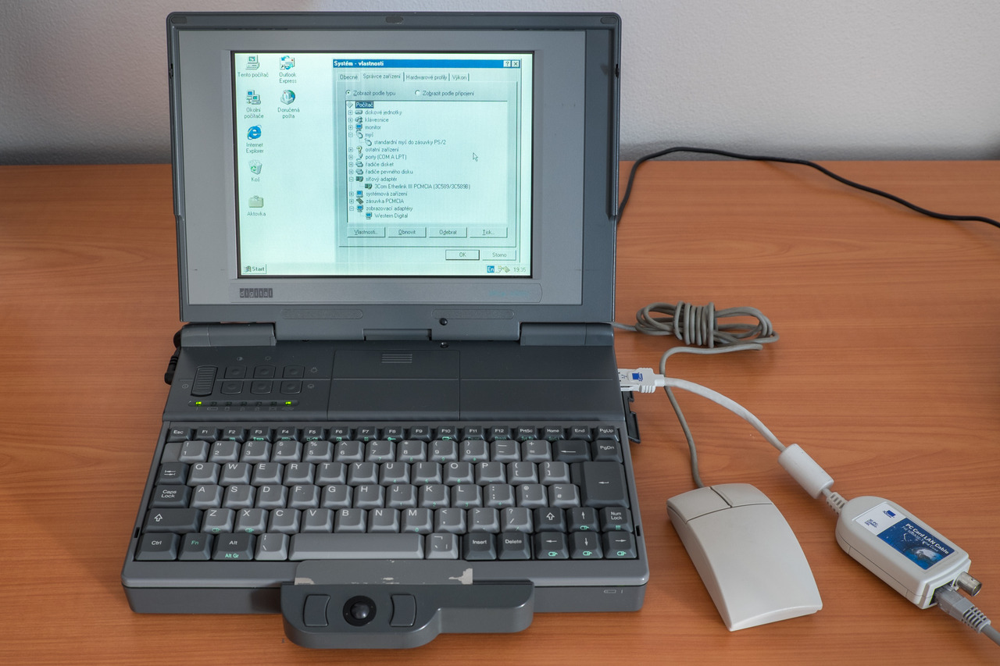
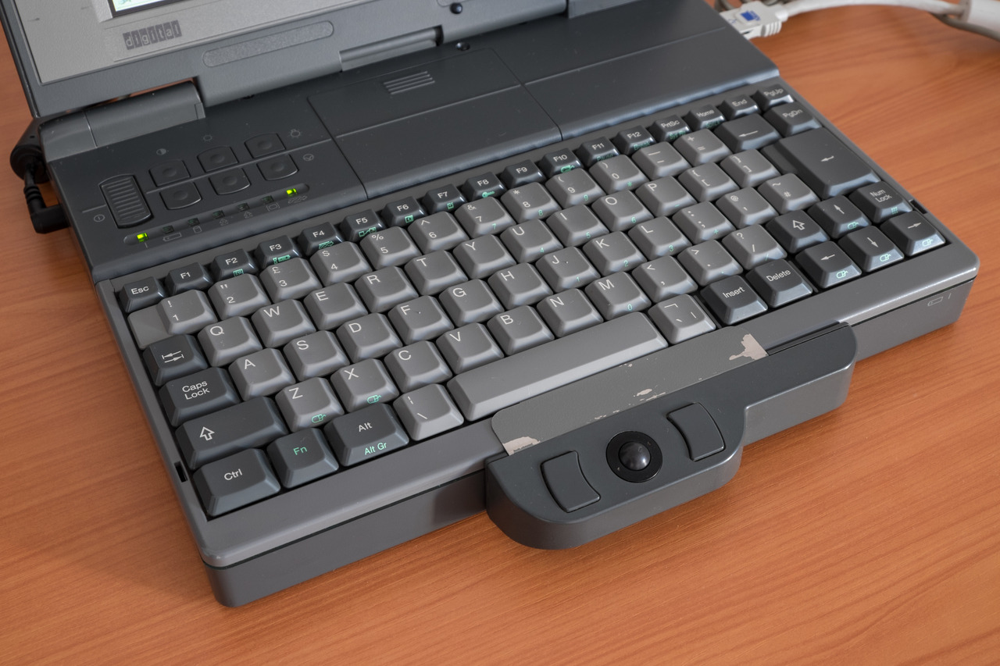
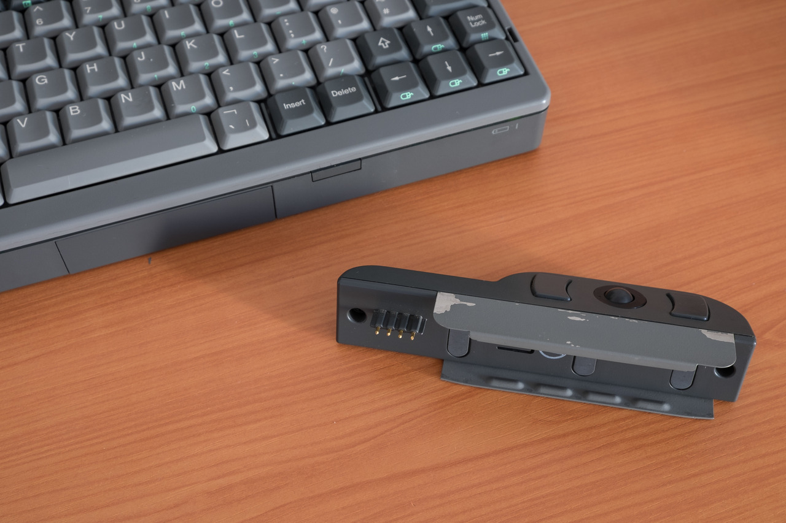
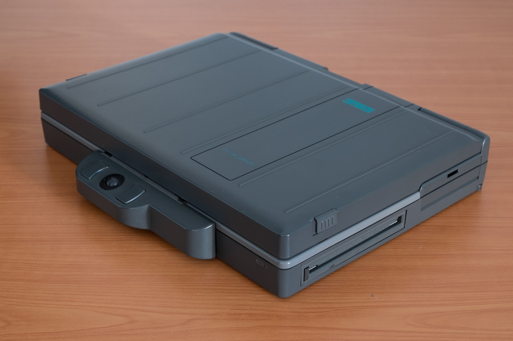
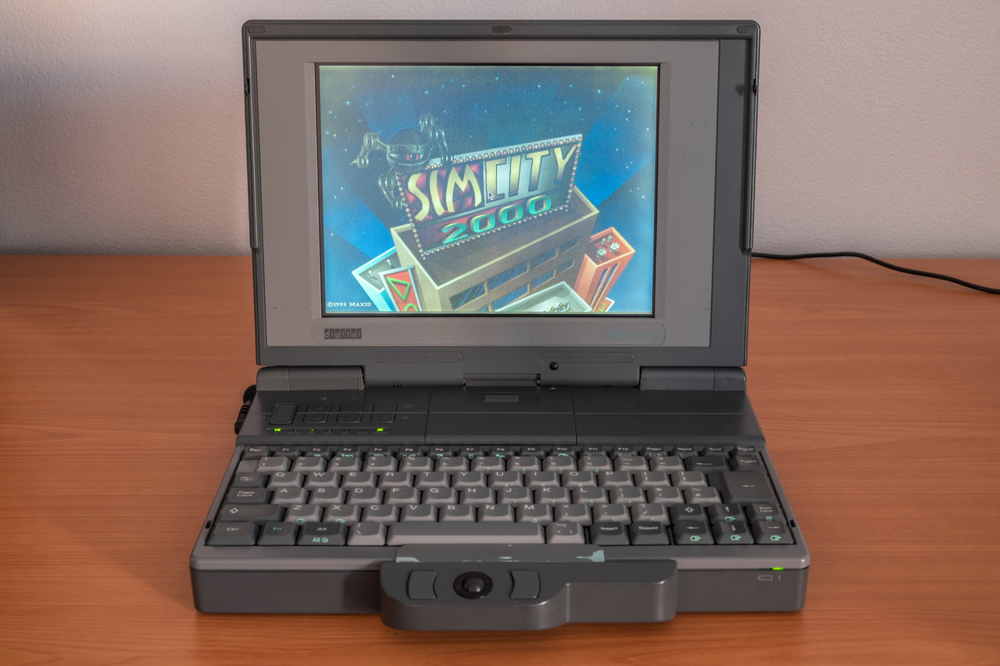
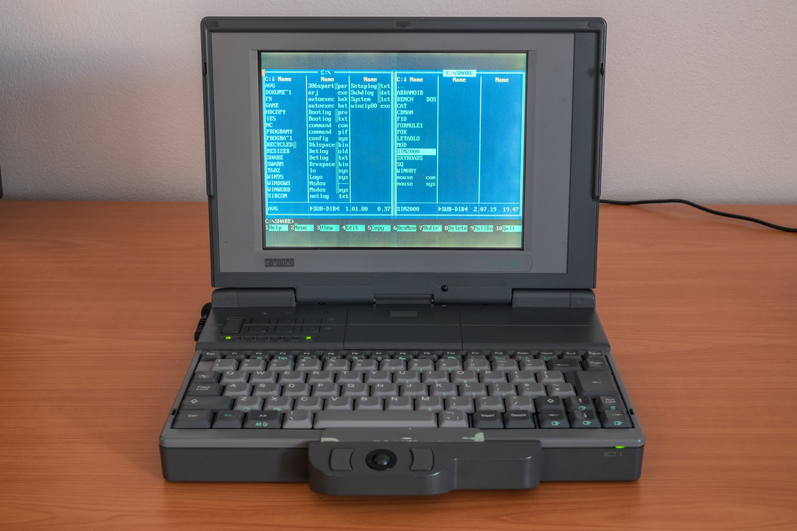
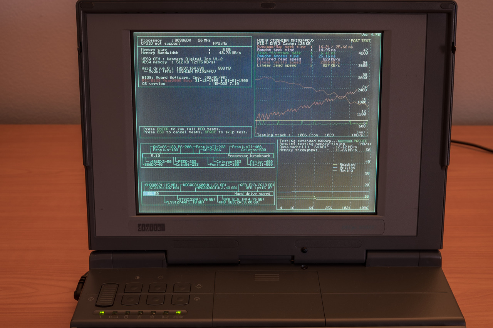

Digital DECpc 325SLC (1993)
Digital (DEC) always made interesting computers and their PC laptops were no exception. DECpc 325SLC was a laptop with the first generation of color passive-matrix displays. The picture quality (aside the ability to display colors) was on par with monochrome passive-matrix screens with all the drawbacks they had. On the other side, the computer was equipped with a 25-MHz Intel 386SL and SVGA graphics for just $2.100 – the price where other laptops from most other brands have just monochrome screens and VGA graphics.
The 386SL is the first CPU specifically designed by Intel for use in laptops. It integrates almost a whole PC into two chips, with the main chip containing (among other things) a 386SX core (with 16-bit data bus) and 64kB of cache (16-bit as well). Intel built the platform to support then new power management functions like the sleep mode (“suspend to RAM”). The performance of this CPU is halfway between 386SX and 386DX.
Graphics chip was not integrated in the two Intel chips. Digital decided to use a chip from Western Digital with 512kB of video memory and the support for 256 colors with a resolution up to 800x600. The chip was attached using the ISA bus and had no acceleration. On the other side, the support for VESA VBE 1.2 and ~3MB/s throughput to video memory made it a good mainstream solution among ISA based cards of the time.
There was also a detachable trackball module available for the computer. It’s not hot-plug and you need to reboot the system, but it works surprisingly well even after decades. Note the mouse icons on the arrow keys and Z/X – these are for the mouse emulation. The laptop with no trackball or mouse attached transparently emulates PS/2 mouse on these keys and the result is way more usable than the Windows feature called “MouseKeys”.